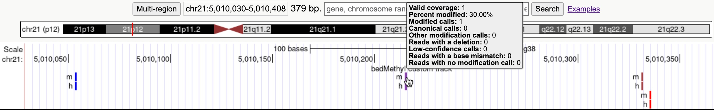

The bedMethyl format is an extension of the standard BED 9 format used to display DNA methylation site data in a genome browser. This format is useful for base-resolution methylation data generated by bisulfite sequencing or direct methylation detection methods such as long-read sequencing. By including both methylation level and support (coverage), bedMethyl provides a detailed view of methylation across the genome.
The bedMethyl format includes the information of a BED 9 along with additional fields:

The items are colored from 0% methylated modified (blue) to 100% (red). Hovering over an item or clicking it shows the additional details found in bedMethyl.
In this example, you will create a bedMethyl custom track using bedMethyl data for the hg38 assembly.
track type=bedMethyl name="bedmethyl example" description="bedMethyl custom track" visibility="pack"
chr21 5010053 5010054 h 0 + 5010053 5010054 255,0,0 1 0.00 0 0 1 0 0 0 0
chr21 5010053 5010054 m 0 + 5010053 5010054 255,0,0 1 0.00 1 0 0 0 0 0 0
chr21 5010215 5010216 h 0 + 5010215 5010216 255,0,0 1 30.00 0 0 1 0 0 0 0
chr21 5010215 5010216 m 0 + 5010215 5010216 255,0,0 1 30.00 1 0 0 0 0 0 0
chr21 5010331 5010332 h 0 + 5010331 5010332 255,0,0 1 70.00 0 0 1 0 0 0 0
chr21 5010331 5010332 m 0 + 5010331 5010332 255,0,0 1 70.00 1 0 0 0 0 0 0
chr21 5010335 5010336 h 0 + 5010335 5010336 255,0,0 1 100.00 0 0 1 0 0 0 0
chr21 5010335 5010336 m 0 + 5010335 5010336 255,0,0 1 100.00 1 0 0 0 0 0 0
The bigMethyl format is the indexed version of bedMethyl using bedToBigBed.
See bigBed format. The bigMethyl format is more efficient to display in
the Genome Browser, and it offers more trackDb options, which will allow for customization. The
following autoSql definition is an example on how to specify bigMethyl files.
This definition, contained in the file
bigMethyl.as,
is pulled in when the bedToBigBed utility is run with the
-as=bigMethyl.as option.
table bigMethyl
"bigMethyl bedMethyl"
(
string chrom; "Reference sequence chromosome or scaffold"
uint chromStart; "Start position in chrom"
uint chromEnd; "End position in chrom"
string name; "dbSNP Reference SNP (rs) identifier or :"
uint score; "Score from 0-1000, derived from p-value"
char[1] strand; "Unused. Always '.'"
uint thickStart; "Start position in chrom"
uint thickEnd; "End position in chrom"
uint color; "Red (positive effect) or blue (negative). Brightness reflects pvalue"
string nValidCov; "Valid Coverage"
double percMod; "Percent Modified"
uint nMod; "Number of calls with a modified base"
uint nCanon; "Number of calls with a canonical base"
uint nOther; "Number of calls with a modified base, other modification"
uint nDelete; "Number of reads with a deletion at this reference position"
uint nFail; "Number of calls where the probability of the call was below the threshold"
uint nDiff; "Number of reads with a base other than the canonical base for this modification"
uint nNoCall; "Number of reads aligned to this reference position, with the correct canonical base, but without a base modification call"
) The first 9 fields of this bigMethyl format are the same as the first 9 fields of the standard BED format.
In this example, you will create a bigMethyl file to display as a custom track.
bedToBigBed
utility.bedToBigBed utility to create a bigMethyl file from your sorted bedMethyl file, using
the bedMethyl.bed file and chrom.sizes files created above.
bedToBigBed -as=bigMethyl.as -type=bed9+9 bedMethyl.bed hg38.chrom.sizes bigMethyl.bb
track type=bigMethyl name="bigMethyl Example" description="A bigMethyl file" bigDataUrl=http://genome.ucsc.edu/goldenPath/help/examples/bigMethyl.bb visibility=packCustom tracks can also be loaded via one URL line. This link loads the same bigMethyl.bb track and sets additional display parameters from Example 2 in the URL:
http://genome.ucsc.edu/cgi-bin/hgTracks?ignoreCookie=1&db=hg38&position=chr21:5,010,030-5,010,408&hgct_customText=track%20type=bigMethyl%20name=Example %20bigDataUrl=http://genome.ucsc.edu/goldenPath/help/examples/bigMethyl.bb %20visibility=packIf you would like to share your bigMethyl data track with a colleague, learn how to create a URL link to your data by looking at Example #6 on the custom track help page.
Because the bigMethyl files are an extension of bigBed files, which are indexed binary files, it can be difficult to extract data from them. UCSC has developed the following programs to assist in working with bigBed formats, available from the binary utilities directory.
bigBedToBed — converts a bigBed file to ASCII BED format.bigBedSummary — extracts summary information from a bigBed file.bigBedInfo — prints out information about a bigBed file.As with all UCSC Genome Browser programs, simply type the program name (with no parameters) at the command line to view the usage statement.
If you encounter an error when you run the bedToBigBed program, check your input
file for data coordinates that extend past the the end of the chromosome. If these are present, run
the bedClip program
(available here) to remove the problematic
row(s) in your input file before running the bedToBigBed program.